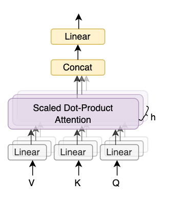

5.4 Multi-Head Attention
Created Date: 2025-09-12
One attention head scores every query against every key and returns a weighted sum of values. Multi-head attention runs several of those heads side by side, each in its own slice of the embedding, then mixes the slices back together. Different heads can follow different relations — one tracks position, another tracks a copied word — because each head has its own projection.
Umar Jamil's Attention is all you need derives the multi-head split this page codes.
5.4.1 One head, then several
Start from a token matrix \(X\) of shape (batch, sequence, embed_dim). A single head computes
with \(Q = XW_Q\), \(K = XW_K\), \(V = XW_V\). Multi-head attention repeats this \(h\) times on slices of width \(d_k = \mathrm{embed\_dim} / h\), concatenates the head outputs, and applies one more matrix \(W_O\):
embed_dim has to be divisible by num_heads. The class in multihead_attention.py asserts that before it allocates the projection.
5.4.2 The shapes in the demo
demo_multi_head_attention.py embeds four padded sentences, each of length 6, into 64 dimensions and uses 8 heads, so each head is 8-dimensional. An embedding lookup produces (4, 6, 64). One linear map expands that to (4, 6, 192), which splits into query, key, and value. Each of those is viewed as (4, 8, 6, 8): batch, heads, sequence, head dimension.
q = q.view(batch_size, seq_len, num_heads, head_dim).transpose(1, 2)
k = k.view(batch_size, seq_len, num_heads, head_dim).transpose(1, 2)
v = v.view(batch_size, seq_len, num_heads, head_dim).transpose(1, 2)
attn_output = torch.nn.functional.scaled_dot_product_attention(q, k, v, attn_mask=pad_mask)The pad mask marks positions whose token id is 0, the <pad> entry. After attention, the heads are transposed back and reshaped to (4, 6, 64), then the output projection mixes them. The demo checks that this shape matches torch.nn.MultiheadAttention on the same input. The weights differ — the two modules are initialized separately — so the check is the shape, not the numbers.

Figure 1 - Several heads read the same sequence
5.4.3 Self, causal, and cross attention
The same kernel, \(QK^{\mathsf T}/\sqrt{d}\) then softmax then \(V\), covers the three maps a transformer uses. What changes is where \(K\) and \(V\) come from, and whether a mask hides the future. attention_kinds.py runs all three on random tensors.
Self-attention sets \(Q = K = V = X\). Every token reads every token. That is the encoder, and it is the ViT visual encoder in the next-but-one chapter.
Causal attention is self-attention with the upper triangle of the score matrix set to \(-\infty\) before the softmax. Position \(t\) can only see \(0, \ldots, t\). The first row of the weight matrix is then a one-hot at column 0, which the script asserts. Language models and the transformer decoder's first attention block use this mask.
def causal_mask(length):
return torch.triu(torch.ones(length, length, dtype=torch.bool), diagonal=1)
causal_out, causal_w = scaled_dot_product(x, x, x, mask=mask)
assert torch.allclose(causal_w[:, :, 0, 0], torch.ones(batch, heads), atol=1e-5)Cross-attention keeps \(Q\) from the decoder (or the UNet) and takes \(K, V\) from another sequence: encoder memory, a text embedding, or a prompt. The output has the query length; the weight matrix is query-length by memory-length. custom_decoder.py stacks causal self-attention, then this cross-attention, then the feed-forward block.
5.4.4 What the next chapter implements
Section 5.5 builds a transformer from scratch, and its attention block is this same split: project, reshape into heads, scaled dot-product, concatenate, project. Causal masking, used in the decoder, is an extra mask on top of the pad mask so position \(t\) cannot read positions after \(t\). The library module and the hand-written function are two views of one calculation.